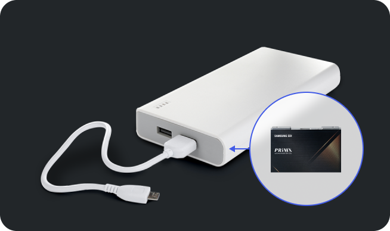
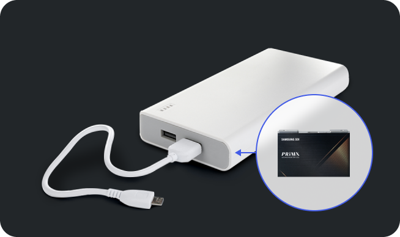
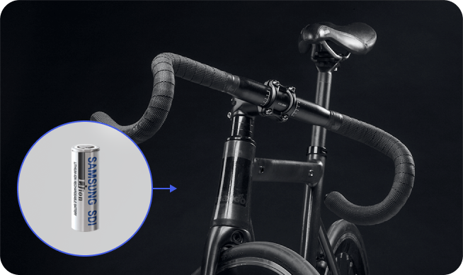
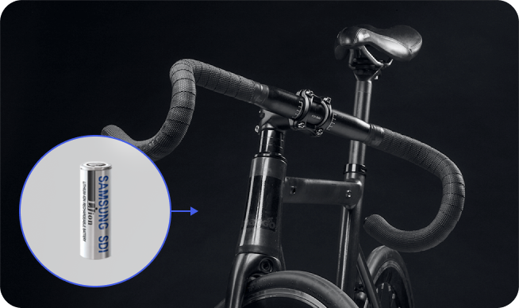
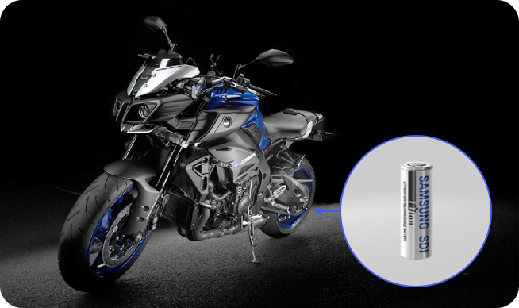
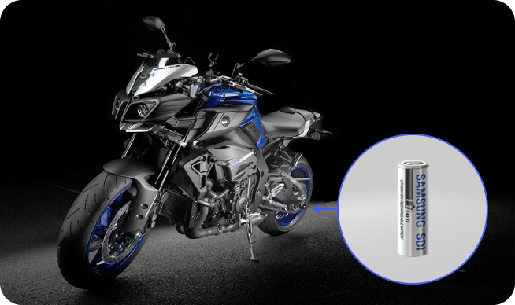

삼성SDI는 2000년 리튬 이온 배터리 사업을 시작한 이래 품질 개선과
제품 안정성을 확보하려고 끊임없이 노력한 결과,
2010년 이후로 세계 리튬 이온 배터리 업계 시장점유율 1위 자리를 유지하고 있습니다.
지속적인 기술 혁신으로 세계 최초로
플렉시블 배터리를 출시하는 등 시장을 선도하는 차세대 기술을 개발하며
소형 배터리 시장에서 리더십을 꾸준히 확보하고 있습니다.
세계 최고 성능 제품의 개발, 지속적인 R&D 투자
최신 생산 시스템, 검증된 품질과 안정성
글로벌 공급망 관리 시스템, 글로벌 판매&서비스 네트워크
세계 1위 리튬 이온 전지, 최고의 성능 퍼포먼스
삼성SDI의 고용량 셀 기술과 노트북에 최적화된 팩 개발/생산 기술로 생산된 노트북용 배터리는 성능을 더욱 향상하면서 이동성을 개선하고
노트북을 더 얇고 가볍게 디자인할 수 있습니다. 더욱더 가볍고 슬림하게 설계된 노트북은 사용자의 이동성을 높여 줍니다.
삼성SDI의 가장 얇고 가벼운 태블릿을 구현할 수 있는 고에너지 밀도의 셀 기술과 차별화된 팩 설계 기술로 만든 초슬림 초경량 리튬 이온 배터리는
태블릿을 훨씬 더 얇고 가볍게 만듭니다.
삼성SDI의 고에너지 밀도 셀 기술과 차별화된 팩 기술은 휴대폰 사용 시간을 연장해 주는 동시에 휴대폰을 더욱더 얇고 가볍게 디자인할 수 있어,
갈수록 높아지는 휴대폰 사용자의 요구를 충족시킬 수 있습니다.
세계에서 에너지 밀도가 가장 높은 리튬 이온 배터리와 다양한 형태를 가진 웨어러블 기기에 적용할 수 있는 커브드와 플랫 배터리를 보유한
삼성SDI의 기술력으로 웨어러블 기기 시장의 무한한 가능성을 열어드립니다.
 

삼성SDI의 세계 최고 용량과 품질 및 안전성을 자랑하는 리튬 이온 배터리 기술과 다양한 스펙의 파워뱅크용 배터리 셀과 팩은 시간과 장소에
구애받지 않는 모바일 생활을 할 수 있게 해줍니다.
삼성SDI는 최고 용량, 최고 출력의 셀은 물론, 설계부터 생산까지 철저하게 검증된 최고 성능의 안전한 배터리 팩 제공으로
여러분의 전동 공구를 더욱더 가볍고 강하게 만들어 줍니다.
삼성SDI의 리튬 이온 배터리는 높은 에너지 효율과 밀도, 그리고 더욱 긴 배터리 수명으로 정원 공구의 편리함과 성능을 개선하는 데 이바지할 것입니다.
그뿐만 아니라 전기 구동 방식으로 인체와 환경에 해가 없고 탁월한 소음 감소 효과로 쾌적하고 편리하게 정원 공구를 사용할 수 있습니다.
삼성SDI의 리튬 이온 배터리 기술력은 기존 배터리 대비 안정적이며 강한 흡입력을 오랫동안 유지합니다.
타사 대비 5배 높은 에너지 밀도와 2배 이상의 긴 배터리 수명으로 작지만 강력한 진공청소기를 경험할 수 있습니다.
 

삼성SDI의 3.5Ah 고용량 셀은 전지 자전거의 주행거리를 더욱 늘려주고, 적은 수의 셀로도 기존과 같은 용량의 배터리 팩을 설계할 수 있어 디자인 유연성을
향상합니다.
삼성SDI의 리튬 이온 배터리로 차별화된 전기 자전거를 경험할 수 있습니다.
삼성SDI 리튬 이온 배터리는 기존 납축 배터리 대비 빠른 충전 시간과 더 긴 배터리 수명으로 제품의 유지보수 편리성을 향상해 비용을 절감해 줍니다.
삼성SDI의 리튬 이온 배터리를 탑재해 경제적이고 깨끗한 전기 스쿠터용 배터리 팩을 만들 수 있습니다.
 

높은 효율성을 자랑하는 삼성SDI의 리튬 이온 배터리는 이그니션을 더 작게 만들고 더 오래 사용할 수 있도록 합니다.
순간 방전전류가 높아 시동 성능이 매우 우수하고 납, 카드뮴, 수은과 같은 유해 물질과 황산과 같은 위험 물질을 사용하지 않아 친환경적입니다.
세계 최고 수준의 삼성SDI의 소형배터리를 살펴보고, 비즈니스 성공에 필요한 제품을 상담해보세요.